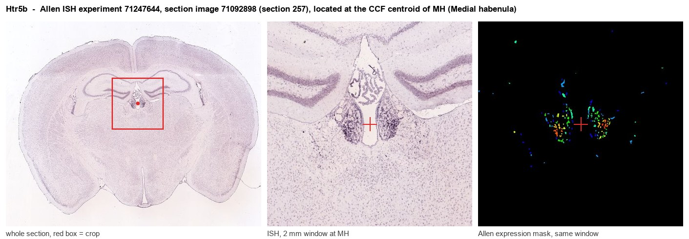

Htr5b
5-hydroxytryptamine receptor 5B (5-HT-5B) (5-HT5B) (Serotonin receptor 5B)
Spatial tier: STRICT_EXCLUSIVE · Class: GPCR · Top region: MH (Medial habenula) · Positive regions: 8/554
47.8Discovery Score
44.0Targetability Score
CEvidence grade C
What this means: Htr5b: predicted fine-region profile is strict-exclusive, with 8 positive regions out of 554 (limit 12); direct spatial validation is required.
Function in MH: evidence, prediction, innovation
- Gene function
- Htr5b encodes the 5-HT5B serotonin receptor, a class-A GPCR of the 5-HT5 family with a pharmacological profile distinct from all other serotonin receptors (high affinity for 5-carboxamidotryptamine, low affinity for sumatriptan). It couples to G proteins, most likely Gi/o, and is functional in rodents but is a pseudogene in humans, which is why it has attracted so little attention.
- Region function
- The medial habenula is an epithalamic relay whose cholinergic/substance P neurons project almost exclusively through the fasciculus retroflexus to the interpeduncular nucleus. This MHb-IPN axis sets nicotine aversion and withdrawal, fear memory expression, anxiety and negative affect.
- Published in this region
- expression only Matthes et al. 1993 (Mol Pharmacol) cloned mouse 5-HT5B and showed by in situ hybridisation that its mRNA is expressed predominantly in the habenula and in hippocampal CA1 - one of the most restricted expression patterns of any serotonin receptor. Wisden et al. 1993 (FEBS Lett) cloned the rat orthologue and confirmed G protein coupling. No functional study has manipulated 5-HT5B in the habenula.
- Predicted function
- Prediction: 5-HT5B is the main route by which raphe serotonergic input modulates medial habenular neurons, most plausibly as a Gi/o-coupled receptor that slows tonic cholinergic pacemaking. Knockout or local antagonism should therefore disinhibit MHb-IPN output and increase anxiety-like behaviour and nicotine aversion, while agonism should mimic part of the anxiolytic effect of serotonergic drugs; the rodent-only nature of the gene means phenotypes will not translate directly to humans.
- Innovation
- ★★★★★ 5/5 A serotonin receptor whose expression is essentially habenula-specific has sat unexamined for thirty years because the human gene is a pseudogene.
- Tools
- No selective ligands exist; 5-carboxamidotryptamine and LSD bind but are non-selective. Htr5b knockout mice are not widely distributed. Allen Brain Atlas ISH and RNAscope probes give reliable anatomy, and CRISPR or AAV-shRNA knockdown in MHb is straightforward.
- References
Direct evidence located at the region

Allen ISH experiment 71247644, section image 71092898 (section 257): the section that contains the CCF centroid of Medial habenula according to the Allen image-to-atlas alignment (reference_to_image), with a 2 mm window around that point. Left: whole section, red box = window. Middle: ISH signal. Right: Allen's expression-mask view of the same window. open this image in the Allen viewer
Look it up yourself: Allen Mouse Brain ISH for Htr5bAllen reference atlas: MH (structure 483)ABC Atlas MERFISH viewer(in the ABC Atlas choose dataset MERFISH-C57BL6J-638850-CCF, colour cells by gene "Htr5b" or by parcellation_substructure "MH")All genes confined to MH + 3-D brain
Direct spatial evidence
MERFISH REGION LOCATOR

DIRECT ALLEN ISH

DIRECT ALLEN ISH

Regional expression figure

Predicted WMB × fine-CCF profile; not direct full-transcriptome spatial measurement.
Spatial profile
Evidence and specificity
- Evidence status
- PREDICTED_FINE
- Direct sources
- None; predicted localization only
- Exclusive threshold
- 12 positive regions out of 554
- Spatial specificity
- 0.383
- Top-region fraction
- 0.142
- Filter status
- PASS
Interpretation limits
- Cell-type-to-region projection is imputed expression, not direct spatial measurement.
- Adult reference atlases do not establish stability across age, sex, strain, state, or disease.
- Transcript abundance does not guarantee protein abundance or genetic-tool performance.